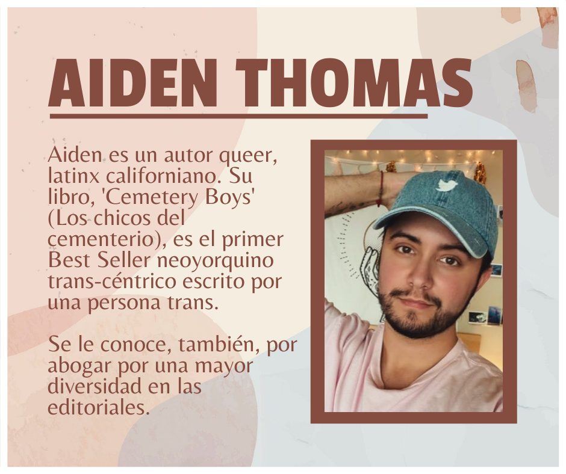
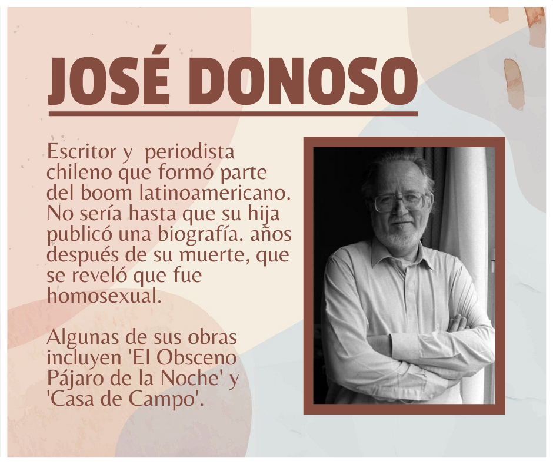

Textos y experiencias



Lo que hay aquí son experiencias y queremos compartirlas contigo!

En el 2015 inicié un proyecto social de fomento lector en niños y jóvenes de escasos recursos. Concretamente con los alumnos del Instituto San Juan Pablo II ubicado en el Pueblo de Jurica de la ciudad de Querétaro.
Gracias a que me permitieron utilizar una pequeña bodega que existía en la escuela, es que puede iniciar con “El Cajón de las Historias”.
Poco a poco los estudiantes y sus familias han ido abriéndose a la experiencia de la literatura. Actualmente contamos ya con un acervo de 2,000 títulos y tan sólo en el mes de septiembre se prestaron 473 libros que los estudiantes pueden llevarse a su casa….. uno de nuestros principales objetivos es sembrar el hábito de la lectura en familia.

Las satisfacciones que me ha brindado el proyecto son muchas y muy diversas, pero sin duda, la mayor de ellas es ver cómo día a día el número de personas que se acercan al Cajón es mayor.
Tenemos muchas planes para el presente ciclo escolar, uno de ellos es “El Cine y la Literatura”, en el que la idea es presentar todos los viernes últimos de cada mes una película (siempre ligada a algún libro que se tiene en el acervo) y así explicar la estrecha relación que guardan estas dos expresiones artísticas.
Si quieren conocer más del Cajón, los invito a seguirnos en alguna de nuestras redes sociales: Facebook Instagram
Si tienes un espacio de lectura puedes enviarnos un mensaje y compartir con nosotros tus experiencias para que aparezcan aquí.
Conoce más